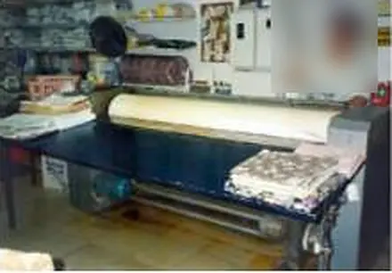
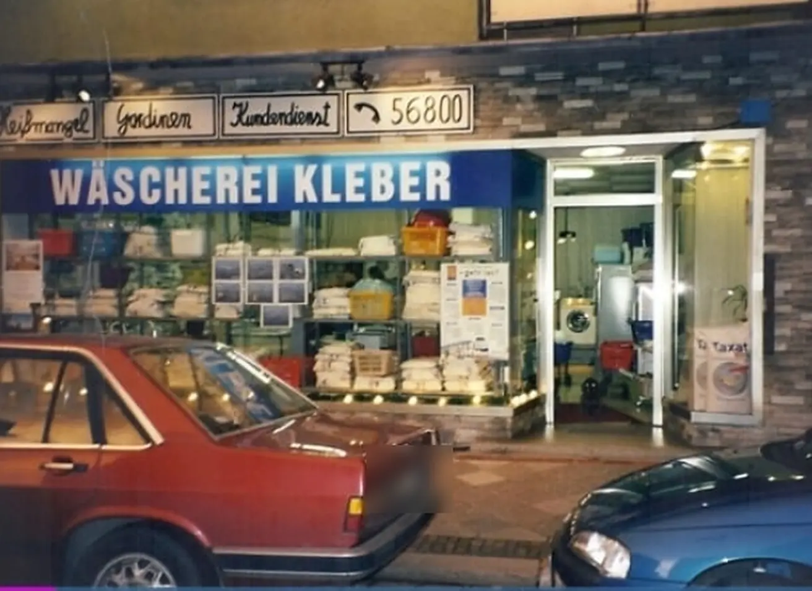
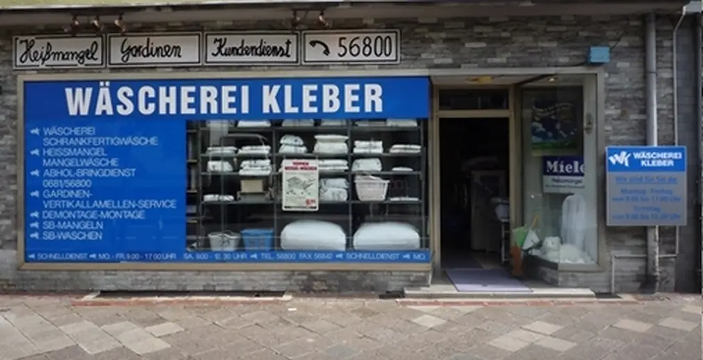

Seit 1971 waschen, mangeln und falten wir in Alt-Saarbrücken – für Nachbarn, Praxen und Firmen. Ein Familienbetrieb, in dem man Sie noch beim Namen kennt.
Rein mit dem Knitter. Bettwäsche, Tischdecken, Servietten – ob für Zuhause, die Praxis oder die Firma.
Heiße Walze, ruhige Hand. Die Mangel macht in Sekunden glatt, wofür man mit dem Bügeleisen eine Stunde steht.
Gefaltet, eingeschlagen, fertig. Und wer selbst mangeln möchte: SB-Mangeln gibt es nach Terminabsprache.
20°C
Ihr Wäschezettel
Ankreuzen, abschicken, abholen lassen.
Wie früher an der Theke – nur dass Sie dafür nicht vorbeikommen müssen. Kreuzen Sie an, was wir für Sie tun sollen. Wir melden uns mit Termin und Preis.
Gardinen & Lamellen
Eine Maschine, die es nur hier gibt.
1993 baute Mark Kleber, der älteste Sohn, eine vollautomatische Reinigungsmaschine für Vertikallamellen. Sie reinigt Lamelle für Lamelle – schonend und schnell. Bis heute.
Abnehmen – wir kommen zu Ihnen, privat wie gewerblich.
Reinigen – Gardinen in der Wäscherei, Lamellen in der eigenen Maschine.
Albert und Ann Kleber übernehmen den SB-Waschsalon Krall – Albert Klebers Schwester Irma und ihr Mann Rudi Krall hatten ihn aufgebaut. Kunden waschen, mangeln und trocknen selbst.
DannDer Lieferservice
Viele Kunden haben keine Zeit, auf freie Maschinen zu warten. Also wäscht und mangelt Kleber für sie – und bringt die Wäsche gleich nach Hause.

SpäterDie Heißmangel
Die ersten Firmen fragen an. Und weil viele vor allem ihre Gardinen gereinigt haben wollen, gibt es bald den Gardinenservice: abhängen, waschen, wieder aufhängen.
1993Die Erfindung1993Die Erfindung
Der älteste Sohn Mark Kleber baut eine vollautomatische Reinigungsmaschine für Vertikallamellen. Lamelle für Lamelle, schonend und schnell.

FrüherDas Schaufenster
Das Schaufenster in der Gersweilerstraße: blaues Schild, weiße Wäsche, Hand-Schilder für Heißmangel, Gardinen und Kundendienst.
2010Die Übergabe2010Die Übergabe
Albert Kleber übergibt den Familienbetrieb an seinen zweiten Sohn Peter Kleber.

HeuteBis heute
Sechs Leute im Betrieb, vier davon aus der Familie. Gleiche Adresse, gleiche Nummer, gleicher Anspruch.
Wischen oder ziehen
4,2★★★★★31 Bewertungen auf Google
„Bitte niemals schließen!“
„In der Wäscherei Kleber fühlt man sich wie in Kindertagen: Alle sind sehr freundlich, der Kunde wird beim Namen gegrüßt, die perfekt geplättete Wäsche wird in Papier eingeschlagen und das Paket zum Auto getragen.“
Angelika B. · Google-Rezension
„Saubere Sache – 5 Sterne ganz klar.“„Perfekte Ausführung!“„Sehr nette Bedienung.“